import matplotlib.pyplot as plt
import numpy as np
import pynapple as nap11 Neural analysis with Pynapple (coding)
This chapter is an introduction to Pynapple.
Pynapple is a python package for analysing neural data.
The package is actively maintained by the Flatiron Institute’s neuroRSE team.
Pynapple can do a lot more than what is covered in this chapter, take a look at the Pynapple documentation for more.
The only thing you’ll need to follow along is a working Python environment with pynapple installed.
See the setup section on how to set up the course environment.
If you want to run this by itself, just install Pynapple using:
pip install pynappleThen open your favourite way of running Python, import the right packages, and follow along!
11.1 Origins
2000: TSToolbox, MATLAB
McNaughton lab: David Redish & Francesco Battaglia2016: TSToolbox2, MATLAB
Adrien Peyrache & Luke Sjulson2018: neuroseries, Python
Francesco Battaglia2021: pynapple, Python
Guillaume Viejo
presently with the Flatiron Institute’s neuroRSE team:
Guillaume Viejo
Sarah Jo Venditto
Edoardo Balzani
William Broderick
Wolf De Wulf, a 2025 neuroRSE intern

11.2 Goal
Pynapple was designed to lie in between data processing and analysis. It contains functions facilitating alignment, wrangling, and performing basic neuroscientific analysis.
Recording
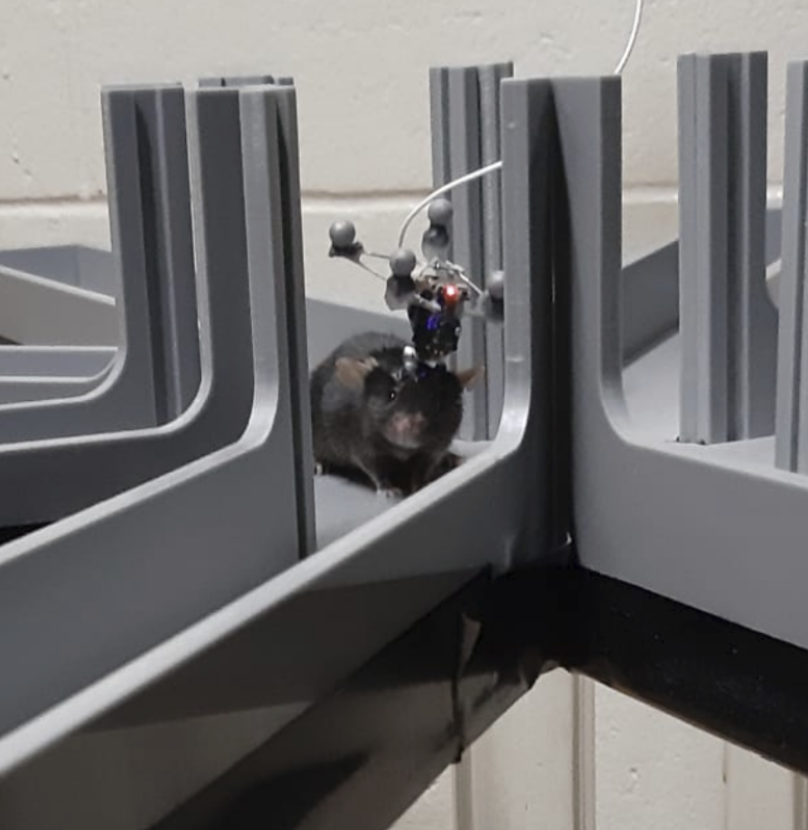
Processing
segmenting (caiman)
spike-sorting (spikeinterface)
Analysis
model fitting (nemos)
interpretation (you)
11.3 Pynapple fundamentals
11.3.1 Time series (Ts)
We store a time series, for example a spike train, in a Ts object.
ts = nap.Ts(t=[1,2,3,4,5])
tsTime (s)
1.0
2.0
3.0
4.0
5.0
shape: 5Show plotting code
fig, ax = plt.subplots(constrained_layout=True, figsize=(5,3))
for timepoint in ts.times():
ax.axvline(timepoint)
ax.yaxis.set_visible(False)
ax.spines['left'].set_visible(False)
ax.spines['right'].set_visible(False)
ax.spines['top'].set_visible(False)
ax.set_xlabel("time (s)")
plt.show()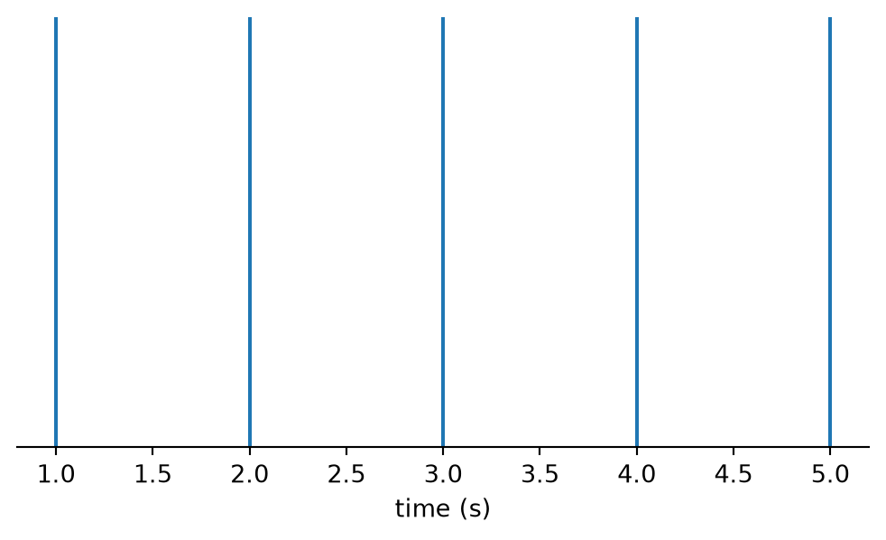
11.3.2 Time series with data (Tsd)
We store a time series with corresponding data values, for example the speed of a mouse when it is running around, in a Tsd object.
tsd = nap.Tsd(t=[1,2,3,4,5], d=[1,1,1,2,1])
tsdTime (s)
---------- --
1 1
2 1
3 1
4 2
5 1
dtype: int64, shape: (5,)Show plotting code
fig, ax = plt.subplots(constrained_layout=True, figsize=(5,3))
ax.plot(tsd)
ax.spines['top'].set_visible(False)
ax.spines['right'].set_visible(False)
ax.set_xlabel("time (s)")
ax.set_ylabel("data (a.u.)")
plt.show()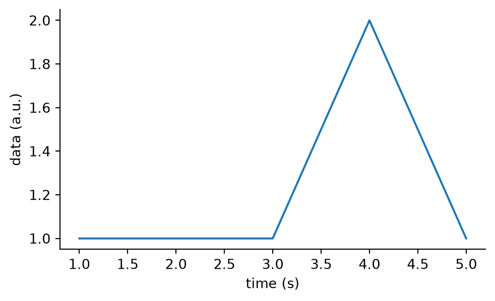
11.3.3 Multiple time series
If we have multiple time series, they can be collected in a TsGroup.
This could be a collection of spike times for multiple spiking units, for example.
tsgroup = nap.TsGroup({
1: nap.Ts([1,2,3,4,5]),
2: nap.Ts([1.5, 2.2, 2.9, 4.2])
})
tsgroup Index rate
------- ------
1 1.25
2 1Show plotting code
cmap = plt.get_cmap("tab10")
fig, ax = plt.subplots(constrained_layout=True, figsize=(5,3))
for i in tsgroup:
ax.vlines(tsgroup[i].times(), i, i+1, label=i, color=cmap(i-1))
ax.yaxis.set_visible(False)
ax.spines['left'].set_visible(False)
ax.spines['right'].set_visible(False)
ax.spines['top'].set_visible(False)
ax.set_xlabel("time (s)")
plt.ylim(1,3)
plt.legend(frameon=False)
plt.show()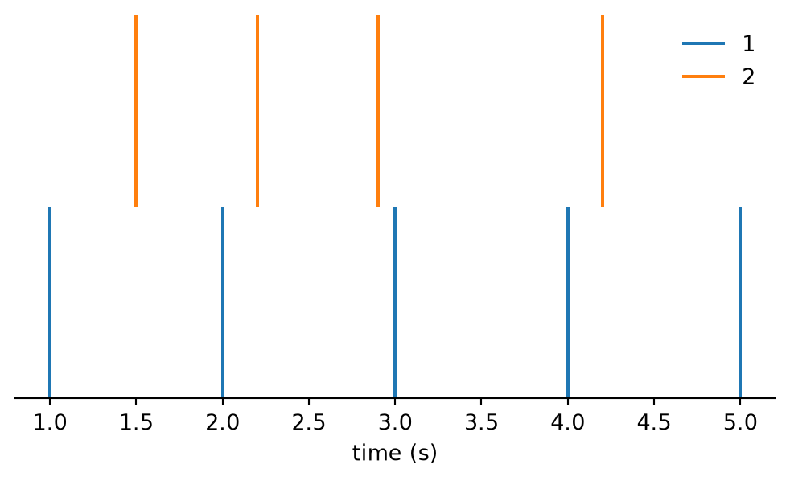
11.3.4 Time series with multiple data columns (TsdFrame)
If we have a time series with multiple data associated with the same time points, they can be stored in a TsdFrame.
This could be a collection of activity traces from multiple cells, e.g. recorded using calcium-imaging.
tsdframe = nap.TsdFrame(
t=[1,2,3,4,5],
d=[[1,2],
[1,2],
[1,3],
[2,1],
[1,2]],
columns=["A", "B"]
)
tsdframeTime (s) A B
---------- --- ---
1 1 2
2 1 2
3 1 3
4 2 1
5 1 2
dtype: int64, shape: (5, 2)Show plotting code
fig, ax = plt.subplots(constrained_layout=True, figsize=(5,3))
for i, col in enumerate(tsdframe.columns):
ax.plot(tsdframe[:, i], label=col)
ax.set_ylabel("data (a.u.)")
ax.set_xlabel("time (s)")
ax.spines['top'].set_visible(False)
ax.spines['right'].set_visible(False)
plt.legend(frameon=False)
plt.show()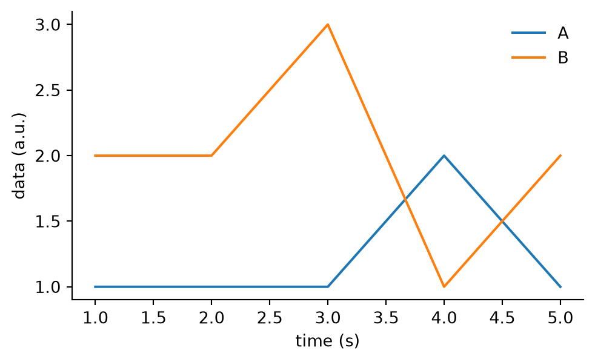
11.3.5 Intervals (IntervalSet)
Often we want to store events that occur across a period rather than at single time points, for example a behavioural stimulus that lasts multiple seconds, or a period of sleep. To represent this, we store time intervals as start and end pairs in an IntervalSet.
epochs = nap.IntervalSet(
start=[1, 3, 7],
end=[2, 5, 9]
)
epochs index start end
0 1 2
1 3 5
2 7 9
shape: (3, 2), time unit: sec.Show plotting code
fig, ax = plt.subplots(constrained_layout=True, figsize=(5,3))
for start, stop in epochs.values:
ax.axvspan(start, stop)
ax.set_xlabel("time (s)")
ax.spines['left'].set_visible(False)
ax.spines['right'].set_visible(False)
ax.spines['top'].set_visible(False)
plt.show()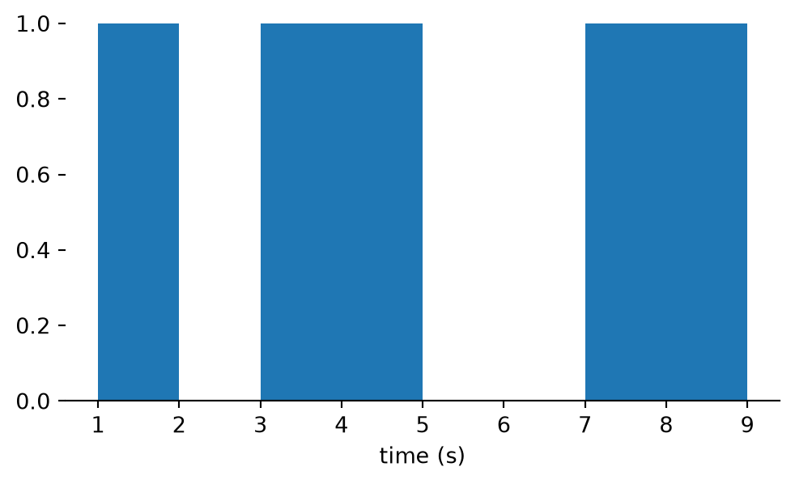
11.4 Interactions
A key goal of Pynapple is to facilitate integrating neural activity and behavioural data for processing and analysis. Therefore, many Pynapple objects interact with each other.
11.4.1 Time supports (time_support)
Every time series object has a time support, an IntervalSet that gives the epochs over which the time series is defined.
ts = nap.Ts(t=[1,2,3,4,5])
ts.time_support index start end
0 1 5
shape: (1, 2), time unit: sec.Show plotting code
fig, ax = plt.subplots(constrained_layout=True, figsize=(5,3))
for timepoint in ts.times():
ax.axvline(timepoint)
for start, stop in ts.time_support.values:
ax.axvspan(start, stop, alpha=0.2)
ax.yaxis.set_visible(False)
ax.spines['left'].set_visible(False)
ax.spines['right'].set_visible(False)
ax.spines['top'].set_visible(False)
ax.set_xlabel("time (s)")
plt.show()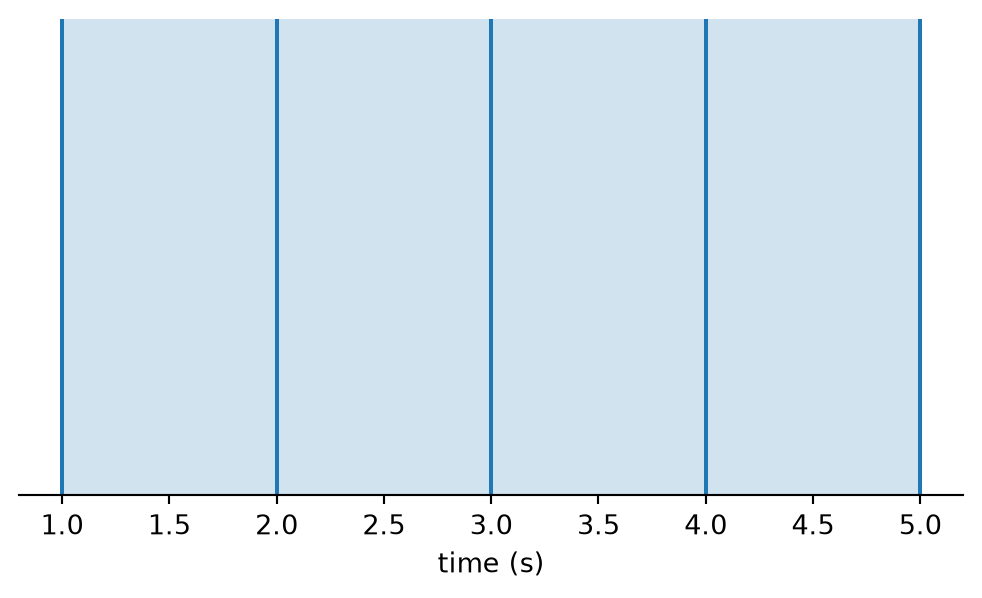
11.4.2 Restricting (restrict)
Any time series object can be restricted to certain IntervalSet, thereby updating its time support. This could be used, for example, to keep only the spike times that fall within the presentation of a behavioural stimulus.
ts = nap.Ts(t=[1,2,3,4,5])
restriction = nap.IntervalSet(start=[1.3, 3.9], end=[3.5, 4.2])
restricted = ts.restrict(restriction)
restrictedTime (s)
2.0
3.0
4.0
shape: 3Show plotting code
fig, ax = plt.subplots(constrained_layout=True, figsize=(5,3))
for timepoint in restricted.times():
ax.axvline(timepoint)
for start, stop in restricted.time_support.values:
ax.axvspan(start, stop, alpha=0.2)
ax.yaxis.set_visible(False)
ax.spines['left'].set_visible(False)
ax.spines['right'].set_visible(False)
ax.spines['top'].set_visible(False)
ax.set_xlabel("time (s)")
ax.set_xlim(1,5)
plt.show()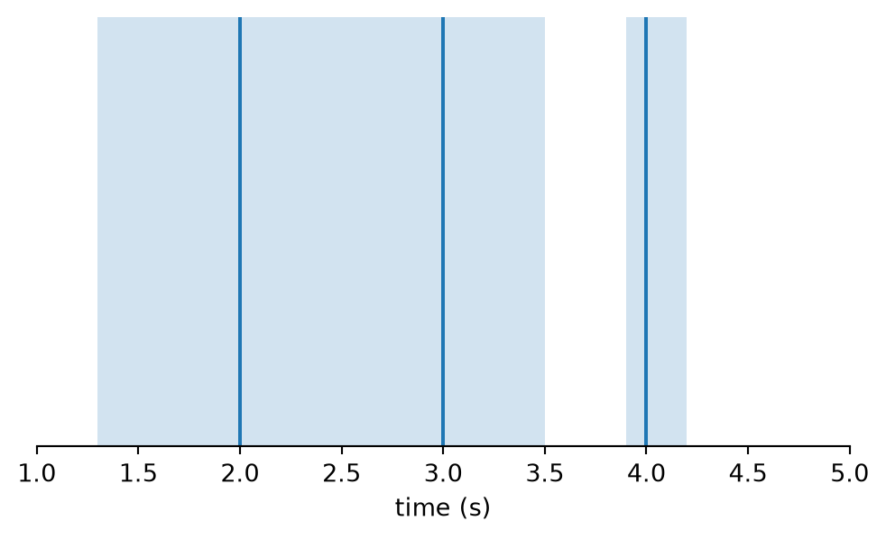
11.4.3 Taking values (value_from)
Given one time series, you can value_from to take the value corresponding to the closest time point in another time series with data. This can be handy, for example, if you want to sample the position of an animal, at particular spike times.
ts = nap.Ts(t=[1,2,3,4,5])
tsd = nap.Tsd(t=np.arange(0, 10, 0.1), d=np.random.randn(100))
values = ts.value_from(tsd)
valuesTime (s)
---------- ---------
1 -0.241159
2 -0.332551
3 0.765531
4 -2.17358
5 0.205071
dtype: float64, shape: (5,)Show plotting code
fig, ax = plt.subplots(constrained_layout=True, figsize=(5,3))
ax.plot(tsd, label="tsd")
ax.plot(values, label="values", linestyle="none", marker=".")
minimum = tsd.values.min()
cmap = plt.get_cmap("tab10")
for timepoint, value in zip(values.times(), values.values, strict=True):
ax.vlines(timepoint, ymin=minimum, ymax=value, color=cmap(1))
ax.set_ylabel("data (a.u.)")
ax.set_xlabel("time (s)")
ax.spines['right'].set_visible(False)
ax.spines['top'].set_visible(False)
fig.legend(frameon=False, bbox_to_anchor=(1.0, 1.1))
plt.show()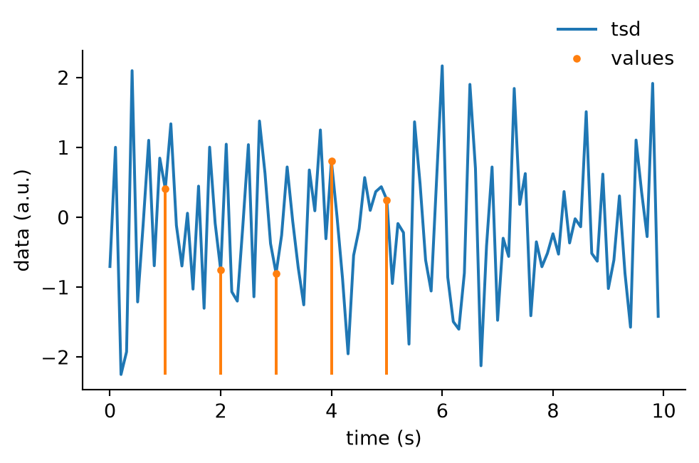
11.5 Wrangling
Pynapple objects are easy to transform, reshape, slice, and more.
11.5.1 Numpy
Most Numpy functions can be applied to Pynapple objects without hassle.
tsdframe = nap.TsdFrame(
t=[1,2,3,4,5],
d=[[1,2],
[1,2],
[1,3],
[2,1],
[1,2]],
columns=["A", "B"]
)
np.mean(tsdframe, axis=1)Time (s)
---------- ---
1 1.5
2 1.5
3 2
4 1.5
5 1.5
dtype: float64, shape: (5,)tsdframe = nap.TsdFrame(
t=[1,2,3,4,5],
d=[[1,2],
[1,2],
[1,3],
[2,1],
[1,2]],
columns=["A", "B"]
)
np.diff(tsdframe, axis=1)Time (s) 0
---------- ---
1 1
2 1
3 2
4 -1
5 1
dtype: int64, shape: (5, 1)11.5.2 Slicing
Pynapple objects can be sliced like Numpy arrays.
tsdframe = nap.TsdFrame(
t=[1,2,3,4,5],
d=[[1,2],
[1,2],
[1,3],
[2,1],
[1,2]],
columns=["A", "B"]
)
tsdframe[:, 1]Time (s)
---------- --
1 2
2 2
3 3
4 1
5 2
dtype: int64, shape: (5,)tsdframe = nap.TsdFrame(
t=[1,2,3,4,5],
d=[[1,2],
[1,2],
[1,3],
[2,1],
[1,2]],
columns=["A", "B"]
)
tsdframe[2:4]Time (s) A B
---------- --- ---
3 1 3
4 2 1
dtype: int64, shape: (2, 2)11.6 Core functions
Pynapple has a core set of functions designed to help with neuroscientific analysis. The following are a subset of them, for an exhaustive list, see the Pynapple documentation.
11.6.1 Binning
The time points of any time series object can be counted.
time_step_s = 0.001
times = np.arange(0, 4, time_step_s)
# Create a firing pattern that increases and decreases as a sine wave
rate = 40 * (1 + np.sin(2*np.pi*times)) / 2
# Use the rate to create discrete spike times
spikes = nap.Ts(times[np.random.rand(len(times)) < rate * time_step_s])
# Bin the spike times
counts = spikes.count(bin_size=0.1)
countsTime (s)
------------------- --
0.07500000000000001 5
0.175 5
0.275 1
0.375 4
0.475 1
0.5750000000000001 2
0.675 0
...
3.275 5
3.375 1
3.4749999999999996 2
3.5749999999999997 2
3.675 2
3.775 0
3.875 1
dtype: int64, shape: (39,)Show plotting code
fig, (ax_rate, ax_spikes, ax_count) = plt.subplots(
3, 1, constrained_layout=True, figsize=(7.5,3), sharex=True
)
ax_rate.plot(times, rate)
ax_rate.spines['right'].set_visible(False)
ax_rate.spines['top'].set_visible(False)
ax_rate.set_ylabel("true rate [Hz]")
ax_spikes.vlines(spikes.times(), 0, 1)
ax_spikes.set_ylabel("spikes")
ax_spikes.set_yticks([])
ax_spikes.spines['left'].set_visible(False)
ax_spikes.spines['right'].set_visible(False)
ax_spikes.spines['top'].set_visible(False)
ax_count.step(counts.times(), counts.values)
ax_count.set_ylabel("count")
ax_count.set_xlabel("time (s)")
ax_count.spines['right'].set_visible(False)
ax_count.spines['top'].set_visible(False)
plt.show()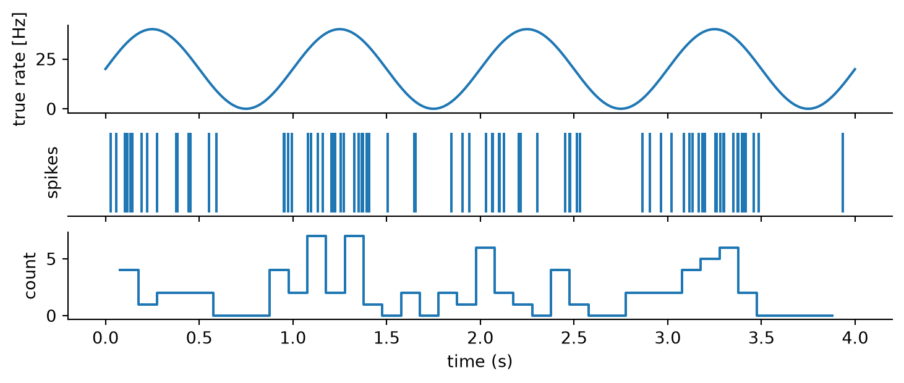
11.6.2 Averaging
If you have continous data already, you would not count events in bins, but rather average values across bins. For example, if you wanted to downsample a signal without losing too much information.
time_step_s = 0.01
times = np.arange(0, 10, time_step_s)
# Create a sine wave signal
signal = np.sin(2 * np.pi * times)
# Add random noise
signal += 0.2 * np.random.randn(len(times))
# Store as Tsd
tsd = nap.Tsd(t=times, d=signal)
# Average across 200ms bins
averaged = tsd.bin_average(bin_size=0.2)
averagedTime (s)
------------------- ----------
0.1 0.620105
0.30000000000000004 0.917919
0.5 0.0589712
0.7 -0.936602
0.9 -0.560765
1.1 0.519952
1.3 0.858339
...
8.7 -0.960732
8.9 -0.521682
9.1 0.513027
9.299999999999999 0.966661
9.5 0.0618459
9.7 -0.912132
9.9 -0.525924
dtype: float64, shape: (50,)Show plotting code
fig, ax = plt.subplots(constrained_layout=True, figsize=(5,3))
plt.plot(tsd, label="original")
plt.plot(averaged, label="averaged")
ax.set_ylabel("data (a.u.)")
ax.set_xlabel("time (s)")
ax.spines['right'].set_visible(False)
ax.spines['top'].set_visible(False)
fig.legend(frameon=False, bbox_to_anchor=(1.0, 1.1))
plt.show()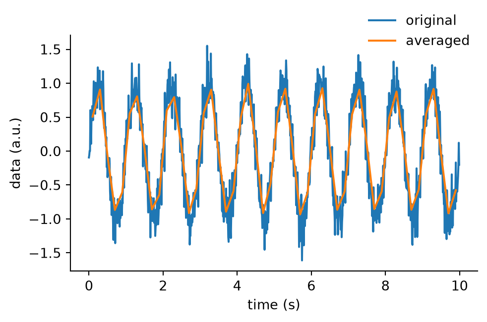
11.6.3 Thresholding
Time series with data can be thresholded, yielding new time series objects with updated time supports.
time_step_s = 0.01
times = np.arange(0, 10, time_step_s)
# Create a sine wave signal
signal = np.sin(2 * np.pi * times)
# Add random noise
signal += 0.2 * np.random.randn(len(times))
# Store as Tsd
tsd = nap.Tsd(t=times, d=signal)
# Threshold
above = tsd.threshold(0.5, method="above")
below = tsd.threshold(-.5, method="below")
above.time_supportindex start end
0 0.07500000000000001 0.08499999999999999
1 0.095 0.425
2 0.445 0.455
3 1.025 1.0350000000000001
4 1.065 1.0750000000000002
5 1.085 1.4249999999999998
6 2.045 2.0549999999999997
... ... ...
35 8.375 8.405000000000001
36 9.024999999999999 9.035
37 9.085 9.094999999999999
38 9.105 9.235
39 9.245000000000001 9.365
40 9.375 9.455000000000002
41 9.985 9.99
shape: (42, 2), time unit: sec.Show plotting code
fig, ax = plt.subplots(constrained_layout=True, figsize=(5,3))
ax.plot(tsd, label="original")
ax.plot(above, label="above", marker=".", linestyle="none")
ax.plot(below, label="below", marker=".", linestyle="none")
ax.spines['right'].set_visible(False)
ax.spines['top'].set_visible(False)
fig.legend(frameon=False, bbox_to_anchor=(1.0, 1.2))
plt.show()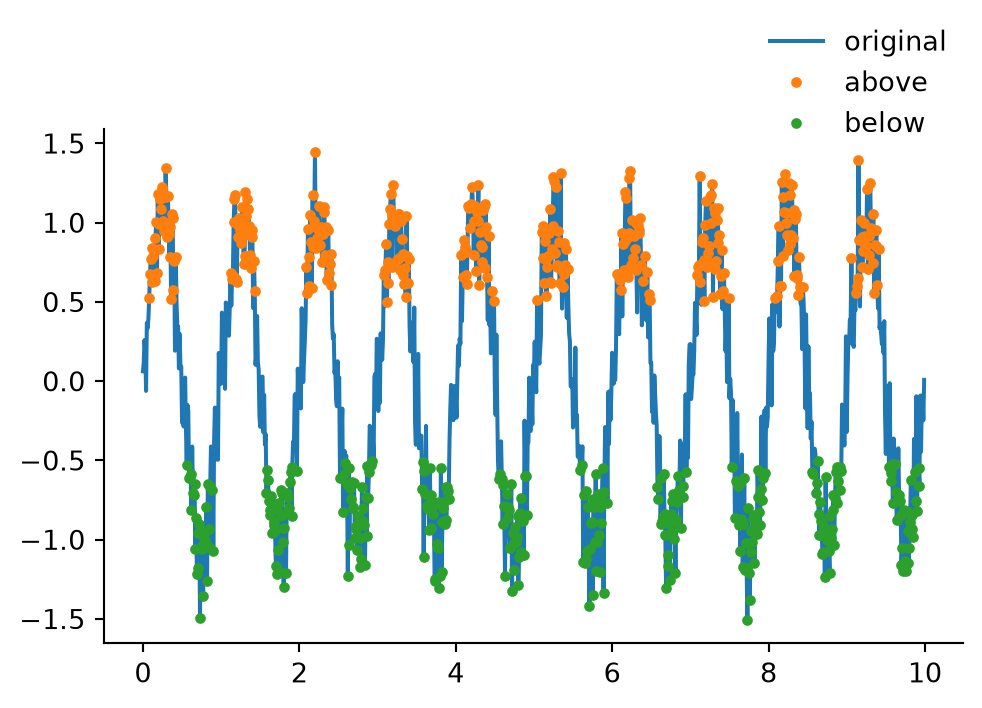
11.6.4 Smoothing
Time series with data can be smoothed. Smoothing makes a signal less noisy by averaging out small, fast changes while keeping the main pattern. The operation consists of convolving the signal with a Gaussian kernel.
time_step_s = 0.01
times = np.arange(0, 10, time_step_s)
# Create a sine wave signal
signal = np.sin(2 * np.pi * times)
# Add random noise
signal += 0.2 * np.random.randn(len(times))
# Store as Tsd
tsd = nap.Tsd(t=times, d=signal)
# Gaussian smooth with a standard deviation of 100ms
smoothed = tsd.smooth(std=0.1)
smoothed/tmp/ipykernel_3680/820394606.py:14: UserWarning: Kernel size (1001 samples) is larger than the number of samples in 1 out of 1 epochs (shortest epoch has 1000 samples). The signal is zero-padded outside each epoch, so every point of the output in those epochs is contaminated by the padding and artifacts are expected. Consider decreasing the kernel/window size.
smoothed = tsd.smooth(std=0.1)Time (s)
----------------- ---------
0.0 0.191779
0.01 0.217366
0.02 0.244642
0.03 0.273474
0.04 0.303702
0.05 0.335137
0.06 0.367565
...
9.93 -0.418442
9.94 -0.384045
9.950000000000001 -0.35042
9.96 -0.31782
9.97 -0.286477
9.98 -0.256592
9.99 -0.228334
dtype: float64, shape: (1000,)Show plotting code
fig, ax = plt.subplots(constrained_layout=True, figsize=(5,3))
ax.plot(tsd, label="original")
ax.plot(smoothed, label="smoothed")
ax.set_ylabel("data (a.u.)")
ax.set_xlabel("time (s)")
ax.spines['right'].set_visible(False)
ax.spines['top'].set_visible(False)
fig.legend(frameon=False, bbox_to_anchor=(1.0, 1.1))
plt.show()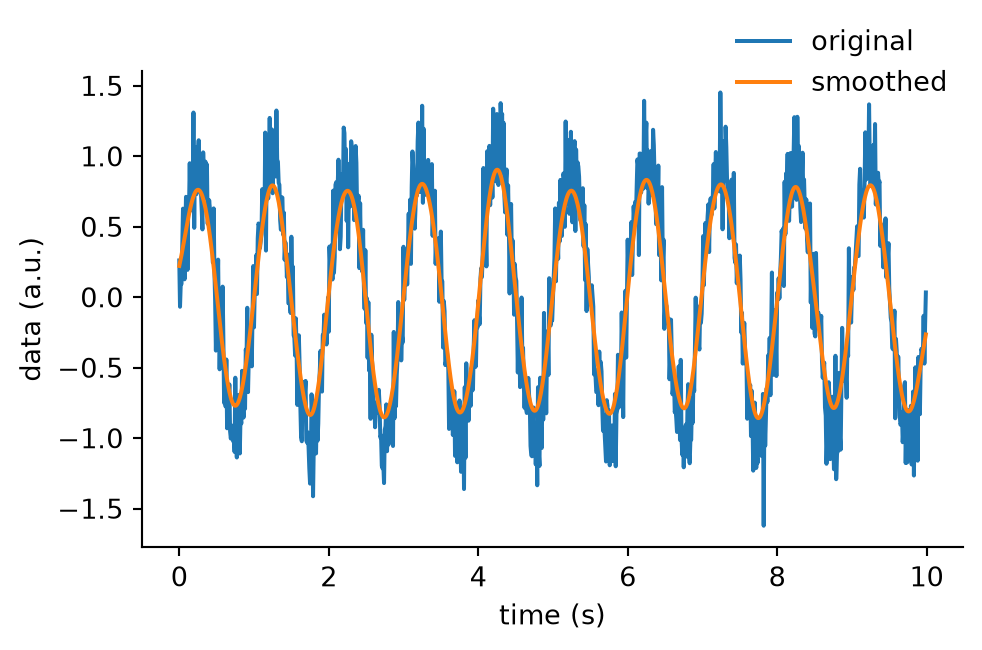
11.7 Advanced Functions
Beyond fundamental processing functions, Pynapple has loads of advanced functionality for neuroscientific analysis.
11.7.1 Autocorrelograms
Given one or a group of time series, you can compute autocorrelograms.
LINK TO PREVIOUS CHAPTERS.
time_step_s = 0.01
times = np.arange(0, 4, time_step_s)
# Create a firing pattern that increases and decreases as a sine wave
rate = 40 * (1 + np.sin(2*np.pi*times)) / 2
# Use the rate to create 2 spiking units, one with double the rate
units = nap.TsGroup({
1: nap.Ts(times[np.random.rand(len(times)) < rate * time_step_s]),
2: nap.Ts(times[np.random.rand(len(times)) < rate*2 * time_step_s]),
})
# Compute autocorrelograms
autocorrelogram = nap.compute_autocorrelogram(
units, binsize=0.1, windowsize=1.0, norm=False
)
autocorrelogram| 1 | 2 | |
|---|---|---|
| -0.9 | 23.125 | 41.272727 |
| -0.8 | 17.250 | 34.787879 |
| -0.7 | 11.875 | 27.333333 |
| -0.6 | 9.375 | 22.545455 |
| -0.5 | 7.750 | 21.515152 |
| -0.4 | 10.750 | 25.212121 |
| -0.3 | 15.625 | 33.818182 |
| -0.2 | 23.375 | 44.727273 |
| -0.1 | 28.000 | 55.575758 |
| 0.0 | 0.000 | 0.000000 |
| 0.1 | 28.875 | 55.636364 |
| 0.2 | 22.500 | 44.242424 |
| 0.3 | 15.750 | 34.060606 |
| 0.4 | 10.875 | 25.333333 |
| 0.5 | 7.750 | 20.969697 |
| 0.6 | 8.875 | 22.363636 |
| 0.7 | 11.375 | 26.848485 |
| 0.8 | 17.125 | 34.363636 |
| 0.9 | 23.125 | 41.212121 |
Show plotting code
ax=autocorrelogram.plot()
plt.ylabel("rate (Hz)")
plt.xlabel("time (s)")
ax.spines['right'].set_visible(False)
ax.spines['top'].set_visible(False)
plt.legend(frameon=False)
plt.show()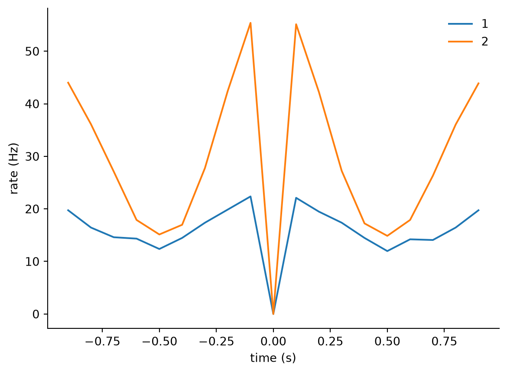
11.7.2 Crosscorrelograms
Given one or two groups of time series, you can also compute crosscorrelograms.
crosscorrelogram = nap.compute_crosscorrelogram(
units, binsize=0.1, windowsize=1.0, norm=False
)
crosscorrelogram| 1 | |
|---|---|
| 2 | |
| -0.9 | 42.625 |
| -0.8 | 35.250 |
| -0.7 | 28.750 |
| -0.6 | 19.750 |
| -0.5 | 19.250 |
| -0.4 | 23.500 |
| -0.3 | 33.875 |
| -0.2 | 47.750 |
| -0.1 | 58.625 |
| 0.0 | 61.125 |
| 0.1 | 55.000 |
| 0.2 | 44.750 |
| 0.3 | 32.500 |
| 0.4 | 23.625 |
| 0.5 | 19.000 |
| 0.6 | 20.375 |
| 0.7 | 26.500 |
| 0.8 | 37.625 |
| 0.9 | 46.750 |
Show plotting code
ax=crosscorrelogram.plot()
plt.ylabel("rate (Hz)")
plt.xlabel("time (s)")
ax.spines['right'].set_visible(False)
ax.spines['top'].set_visible(False)
plt.legend(frameon=False)
plt.show()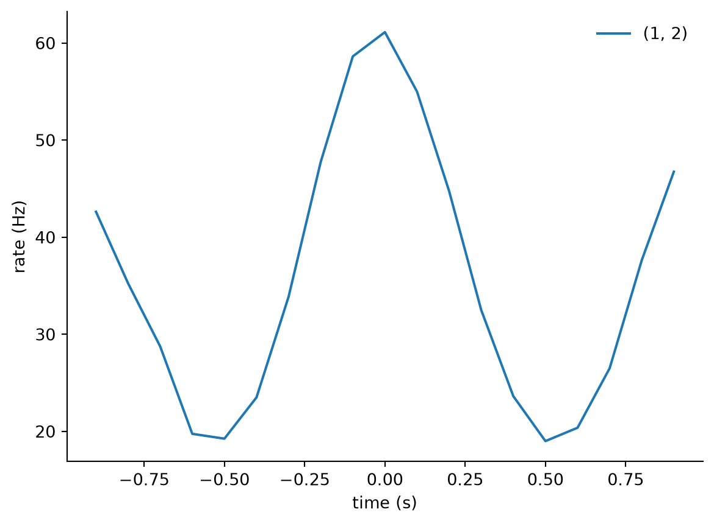
11.7.3 Signal processing
Pynapple wraps a lot of scipy functions for signal processing.
Let’s simulate a noisy multi-frequency signal (the combination of multiple sine waves oscillating at different frequencies):
sampling_rate_hz = 1000
times = np.linspace(0, 2, sampling_rate_hz * 2)
# Signals at different frequencies
signal_2Hz = np.cos(times*2*np.pi*2)
signal_10Hz = np.cos(times*2*np.pi*10)
signal_50Hz = np.cos(times*2*np.pi*50)
# Combine
signal = signal_2Hz+signal_10Hz+signal_50Hz
# Add noise
signal += np.random.normal(0, 0.5, len(times))
# Store in Tsd
tsd = nap.Tsd(t=times,d=signal)
tsdTime (s)
--------------------- -------
0.0 3.22665
0.0010005002501250625 3.67033
0.002001000500250125 2.12386
0.003001500750375187 3.47903
0.00400200100050025 2.23426
0.0050025012506253125 1.93146
0.006003001500750374 1.54315
...
1.9939969984992494 1.0325
1.9949974987493746 1.78502
1.9959979989994996 2.43145
1.9969984992496246 2.38327
1.9979989994997498 2.90014
1.9989994997498748 2.89927
2.0 2.74538
dtype: float64, shape: (2000,)Show plotting code
fig, (ax2, ax10, ax50, ax) = plt.subplots(
4,
1,
constrained_layout=True,
figsize=(5,6),
sharex=True
)
ax.plot(tsd)
ax2.plot(times,signal_2Hz, color="red")
ax2.spines['right'].set_visible(False)
ax2.spines['top'].set_visible(False)
ax2.set_ylabel("2Hz")
ax10.plot(times,signal_10Hz, color="red")
ax10.spines['right'].set_visible(False)
ax10.spines['top'].set_visible(False)
ax10.set_ylabel("10Hz")
ax50.plot(times,signal_50Hz, color="red")
ax50.spines['right'].set_visible(False)
ax50.spines['top'].set_visible(False)
ax50.set_ylabel("10Hz")
ax.set_ylabel("mixed signal (a.u.)")
ax.set_xlabel("time (s)")
ax.spines['right'].set_visible(False)
ax.spines['top'].set_visible(False)
plt.show()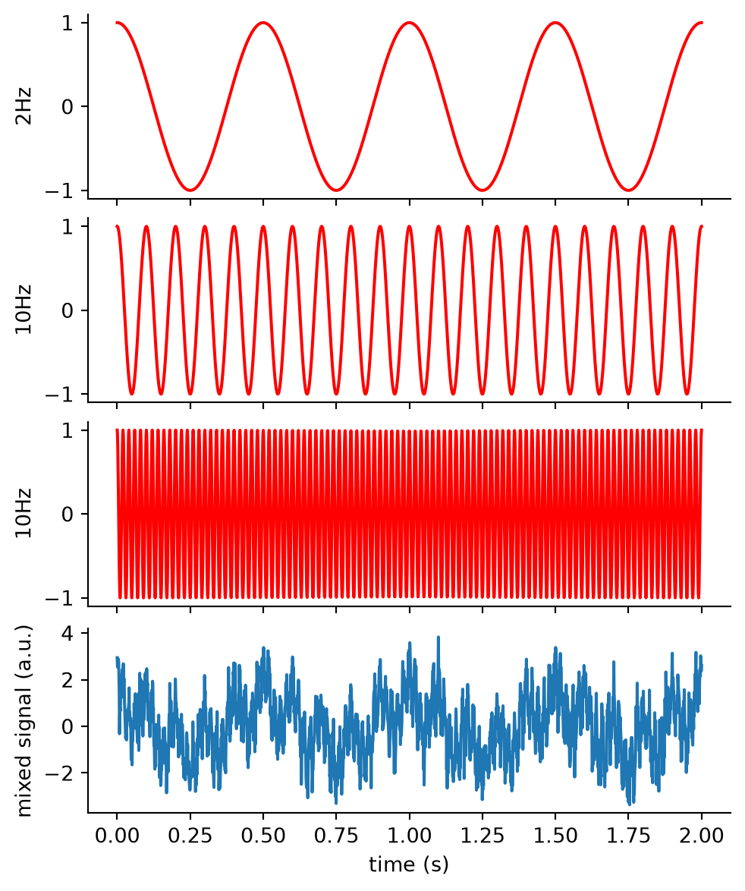
11.7.3.1 Bandpass filter
We can bandpass filter to extract certain frequency bands. For example, if we apply a bandpass filter with a 8Hz high-pass and 12Hz low-pass cutoff, we will keep only the part of the signal in the 8-12hz range.
filtered = nap.apply_bandpass_filter(
data=tsd,
cutoff=(8, 12),
fs=sampling_rate_hz,
mode='butter'
)
filteredTime (s)
--------------------- ----------
0.0 0.3415
0.0010005002501250625 0.318851
0.002001000500250125 0.294891
0.003001500750375187 0.26968
0.00400200100050025 0.243283
0.0050025012506253125 0.215769
0.006003001500750374 0.187214
...
1.9939969984992494 0.00307235
1.9949974987493746 0.00277527
1.9959979989994996 0.00249006
1.9969984992496246 0.00221863
1.9979989994997498 0.00196252
1.9989994997498748 0.00172289
2.0 0.00150059
dtype: float64, shape: (2000,)Show plotting code
fig, (ax_original, ax_filtered) = plt.subplots(
2,
1,
constrained_layout=True,
figsize=(5,4),
sharex=True
)
ax_original.plot(tsd, color="red")
ax_original.set_ylabel("original (a.u.)")
ax_original.spines['right'].set_visible(False)
ax_original.spines['top'].set_visible(False)
ax_filtered.plot(filtered)
ax_filtered.set_xlabel("time (s)")
ax_filtered.set_ylabel("filtered (a.u.)")
ax_filtered.spines['right'].set_visible(False)
ax_filtered.spines['top'].set_visible(False)
plt.show()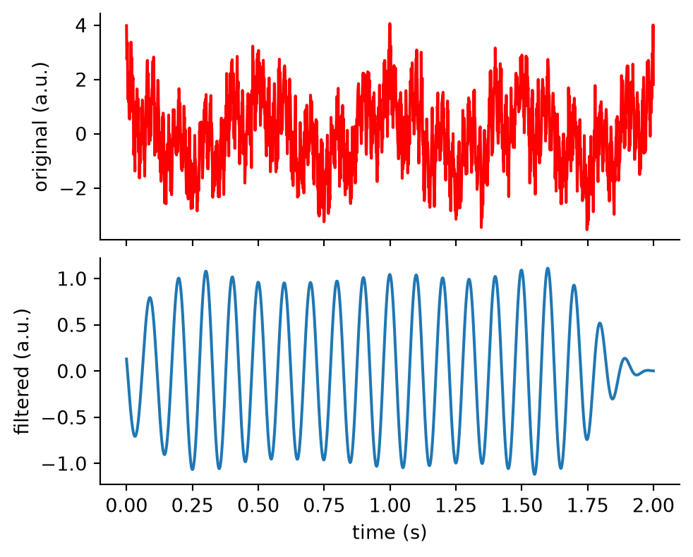
11.7.3.2 Power-spectral density
We can compute the power-spectral density (PSD) to find frequencies of interest.
The PSD shows how strongly different frequencies contribute to a signal. You only ever compute it up to half the sampling rate (the Nyquist frequency), because higher frequencies cannot be reliably recovered from the recorded data.
psd = nap.compute_power_spectral_density(
tsd,
fs=sampling_rate_hz
)
psd| 0 | |
|---|---|
| 0.0 | 0.000024 |
| 0.5 | 0.000767 |
| 1.0 | 0.000212 |
| 1.5 | 0.000567 |
| 2.0 | 1.009555 |
| ... | ... |
| 497.5 | 0.000012 |
| 498.0 | 0.000259 |
| 498.5 | 0.000288 |
| 499.0 | 0.000352 |
| 499.5 | 0.000784 |
1000 rows × 1 columns
Show plotting code
fig, ax = plt.subplots(constrained_layout=True, figsize=(5,3))
ax.plot(psd)
ax.set_ylabel("power")
ax.set_xlabel("frequency (Hz)")
ax.spines['right'].set_visible(False)
ax.spines['top'].set_visible(False)
plt.show()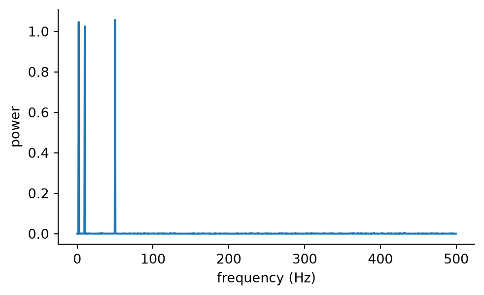
11.7.4 Perievent
A typical neuroscientific analysis consists of aligning activity to a set of stimuli or events. For example, spiking activity around a stimulus presentation.
Let’s start by simulating a spiking unit that has clear stimulus-locked activity:
stimuli = nap.Ts(t=np.arange(0, 1000, 1), time_units="s")
baseline = np.random.uniform(0, 1000, 500)
burst = np.concatenate([
np.random.normal(
st + 0.1, 0.05, 3
)
for st in stimuli.times()
])
ts = nap.Ts(t=np.sort(np.concatenate([baseline, burst])))
tsTime (s)
0.09629462170086651
0.10318152919063564
0.16021670786352135
1.0573112143162524
1.1150890473550368
1.1743895751122844
2.042874020377703
...
998.0673320637247
998.1673234035721
998.6180602857147
998.7472439121478
999.0124507501833
999.1197047097475
999.1212319363217
shape: 3500Show plotting code
segment = nap.IntervalSet(100, 103.9)
fig, ax = plt.subplots(1, 1, constrained_layout=True)
ax.vlines(ts.restrict(segment).times(), 0.04, 0.10, label="spikes")
ax.vlines(
stimuli.restrict(segment).times(),
0.0,
0.14,
color="gray",
linestyle="--",
label="stimulus",
)
ax.yaxis.set_visible(False)
ax.spines["left"].set_visible(False)
ax.spines['right'].set_visible(False)
ax.spines['top'].set_visible(False)
ax.set_xlabel("time (s)")
plt.show()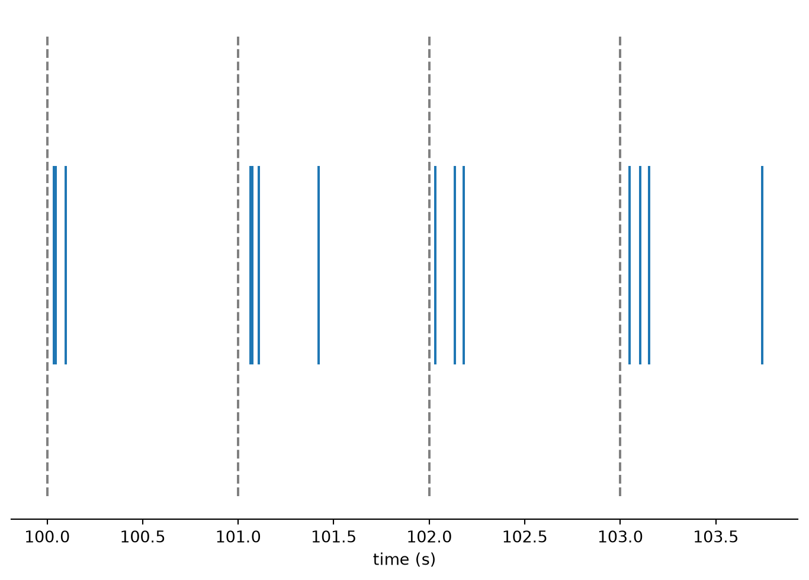
Now, we can easily compute a peri-event time histogram (PETH) as follows:
peth = nap.compute_perievent(
data=ts,
events=stimuli,
window=(-0.1, 0.4))
pethIndex rate events
------- ------ --------
0 6.0 1.0
1 6.0 2.0
2 6.0 3.0
3 6.0 4.0
4 6.0 5.0
5 6.0 6.0
6 6.0 7.0
... ... ...
992 6.0 993.0
993 8.0 994.0
994 6.0 995.0
995 6.0 996.0
996 6.0 997.0
997 6.0 998.0
998 6.0 999.0Show plotting code
fig, ax = plt.subplots(figsize=(6, 4))
ax.plot(peth.to_tsd(), "|", markersize=5)
ax.set_ylabel("event")
ax.set_xlabel("time from event (s)")
ax.axvline(0.0, color="gray", linestyle="--")
ax.spines['right'].set_visible(False)
ax.spines['top'].set_visible(False)
plt.show()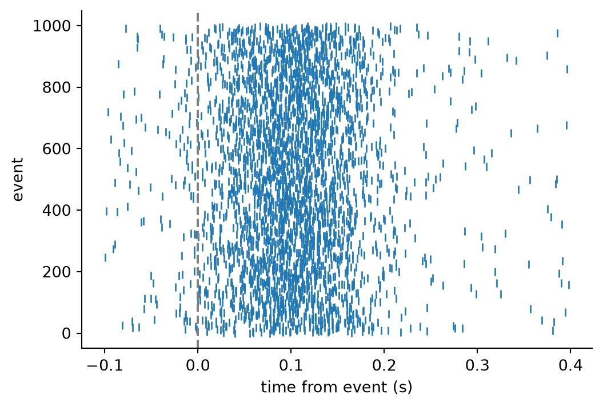
A PETH aligns all activity (spikes) with respect to the event times.
11.7.5 Tuning curves
A typical neuroscientific analysis is that of computing tuning curves: the mean activity curve with respect to a variable of interest. Well known examples are the response of neurons in the visual cortex with respect to the orientation of a bar stimulus, the response of neurons in the postsubiculum with respect to head direction, or the response of hippocampal neurons with respect to position on a track.
Tuning curves can be computed from both discrete (spike times) and continuous activity. Pynapple’s compute_tuning_curves function handles both cases, depending on whether you pass a Ts or Tsd as data. In what follows, we’ll simulate computing tuning curves from a circular variable (e.g. bar angle, or head direction).
Let’s start by simulating some spiking units that are clearly modulated by a circular feature:
n_neurons = 6
# Divide the circular feature space (0 to 2π) into bins
bins = np.linspace(0, 2*np.pi, 61)
# Create a Gaussian-shaped tuning curve centred at 0
# This represents a neuron that fires most strongly for one preferred value
x = np.linspace(-np.pi, np.pi, len(bins)-1)
tmp = np.roll(
np.exp(-(1.5 * x) ** 2), # Gaussian bump
(len(bins)-1)//2 # Shift peak to the centre of the array
)
# Create tuning curves for all neurons by shifting the preferred value
# Each neuron responds to a different part of the circular space
tc = np.array([
np.roll(tmp, i * (len(bins)-1)//n_neurons)
for i in range(n_neurons)
]).T
# Create a time vector
total_timesteps = 10000
time_step_sec = 0.01
timestep = np.arange(total_timesteps) * time_step_sec
# Simulate a random trajectory through the circular feature space
# The cumulative sum creates a smooth random walk
# Gaussian filtering removes abrupt jumps
# Modulo 2π keeps the feature within the circular range [0, 2π)
feature = nap.Tsd(
t=timestep,
d=np.cumsum(np.random.randn(total_timesteps) * 0.5),
).smooth(0.2) % (2*np.pi)
# Find which tuning curve bin corresponds to each feature value
index = np.digitize(feature, bins) - 1
# Look up each neuron's activity at the current feature value
# Then sample spikes randomly based on this activity level
count = np.random.poisson(tc[index]) > 0
tsgroup = nap.TsGroup({
i + 1: nap.Ts(timestep[count[:, i]])
for i in range(n_neurons)
})
epochs = nap.IntervalSet(0, 10)Let’s visualise what we generated.
We now have a random walk in the feature space:
Show plotting code
fig, ax = plt.subplots(constrained_layout=True, figsize=(6, 4))
ax.plot(feature.restrict(epochs), linestyle="none", marker="o")
ax.set_yticks([0, 2*np.pi], ["0", "2π"])
ax.set_ylim(0, 2*np.pi)
ax.set_xlabel("time(s)")
ax.set_ylabel("feature (rad)")
ax.spines['right'].set_visible(False)
ax.spines['top'].set_visible(False)
plt.show()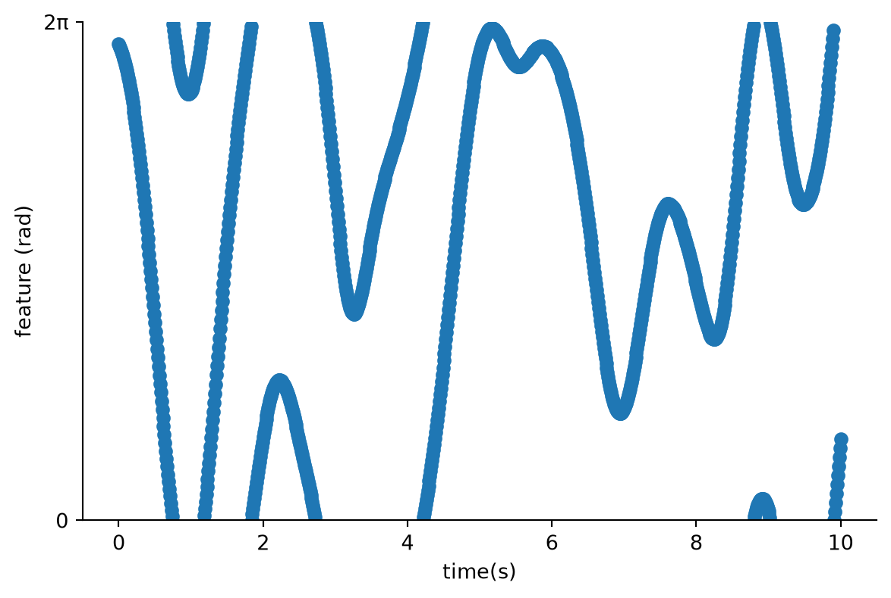
As well as the activity of 6 neurons, modulated by the feature:
Show plotting code
fig, ax = plt.subplots(constrained_layout=True, figsize=(6, 4))
ax.plot(tsgroup.restrict(epochs).to_tsd(), linestyle="none", marker="|")
ax.tick_params(axis="y", length=0)
ax.set_xlabel("time(s)")
ax.spines['right'].set_visible(False)
ax.spines['left'].set_visible(False)
ax.spines['top'].set_visible(False)
plt.show()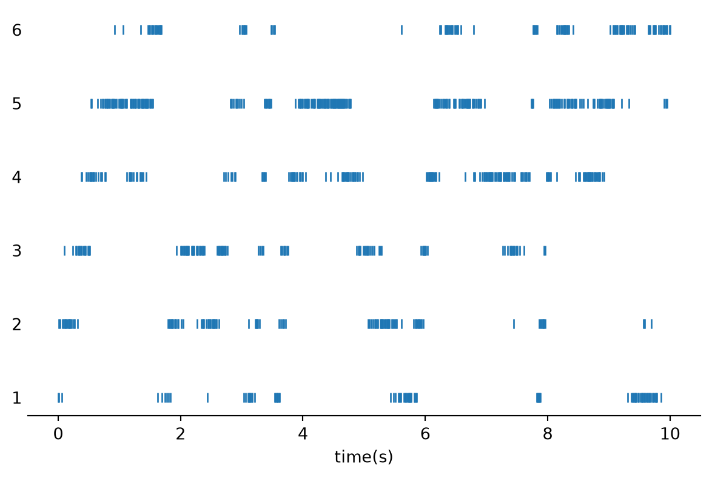
We can now use Pynapple to easily compute tuning curves with respect to the circular feature.
The output is an xarray.DataArray:
tuning_curves = nap.compute_tuning_curves(
data=tsgroup,
features=feature,
bins=120,
range=(0, 2*np.pi),
feature_names=["feature"]
)
tuning_curves<xarray.DataArray (unit: 6, feature: 120)> Size: 6kB
array([[75.75757576, 67.05882353, 53.08641975, 66.21621622, 61.11111111,
52.74725275, 46.26865672, 40.90909091, 48.57142857, 48.19277108,
41.97530864, 40.47619048, 24.75247525, 21.91780822, 29.21348315,
18.33333333, 19.29824561, 12.5 , 14.28571429, 10.9375 ,
8.21917808, 4.83870968, 5.79710145, 3.84615385, 1.20481928,
0. , 0. , 0. , 0. , 0.78125 ,
0. , 0. , 0. , 0. , 0. ,
0. , 0. , 0. , 0. , 0. ,
0. , 0. , 0. , 0. , 0. ,
0. , 0. , 0. , 0. , 0. ,
0. , 0. , 0. , 0. , 0. ,
0. , 0. , 0. , 0. , 0. ,
0. , 0. , 0. , 0. , 0. ,
0. , 0. , 0. , 0. , 0. ,
0. , 0. , 0. , 0. , 0. ,
0. , 0. , 0. , 0. , 0. ,
0. , 0. , 0. , 0. , 0. ,
0. , 0. , 0. , 0. , 0. ,
0. , 0. , 1.36986301, 1.20481928, 1.2987013 ,
2.5 , 3.57142857, 1.44927536, 3.75 , 5.43478261,
...
0. , 0. , 0. , 0. , 0. ,
0. , 0. , 0. , 0. , 0. ,
0. , 0. , 0. , 0. , 0. ,
0. , 0. , 0. , 0. , 0. ,
0. , 0. , 0. , 0. , 0. ,
0. , 0. , 0. , 0. , 0. ,
0. , 0. , 0. , 0. , 0. ,
0. , 0. , 0. , 0. , 0. ,
0. , 0. , 0. , 0. , 0. ,
0. , 0. , 0. , 0. , 3. ,
0. , 0. , 0. , 0.91743119, 2. ,
3.96039604, 4.95867769, 5. , 7.69230769, 6.42201835,
11.82795699, 6.18556701, 26.58227848, 11.70212766, 20. ,
21.17647059, 24.35897436, 28.42105263, 41.55844156, 36.45833333,
41.4893617 , 41.66666667, 46.57534247, 50.60240964, 54.54545455,
56.25 , 58.33333333, 69.56521739, 53.75 , 64.13043478,
68.57142857, 63.07692308, 60.60606061, 63.0952381 , 63.01369863,
66.12903226, 54.28571429, 54.92957746, 42.5 , 41.4893617 ,
32.89473684, 38.80597015, 34.61538462, 22.3880597 , 26.76056338,
24.44444444, 21.51898734, 6.66666667, 6.84931507, 13.82978723]])
Coordinates:
* unit (unit) int64 48B 1 2 3 4 5 6
* feature (feature) float64 960B 0.02618 0.07854 0.1309 ... 6.152 6.205 6.257
Attributes:
occupancy: [ 66. 85. 81. 74. 72. 91. 67. 66. 70. 83. 81. 84. ...
bin_edges: [array([0. , 0.05235988, 0.10471976, 0.15707963, 0.209...
fs: 100.0
rates: [12.55125513 13.30133013 14.52145215 13.38133813 14.33143314 ...It has 2 dimensions, one for the neurons, and one for the feature bins.
These can be easily visualised:
Show plotting code
fig, ax = plt.subplots(constrained_layout=True, figsize=(6, 4))
tuning_curves.plot.line(ax=ax, x="feature")
plt.ylabel("firing rate [Hz]")
plt.xticks([0, 2*np.pi], ["0", "2π"])
legend=ax.get_legend()
legend.set_frame_on(False)
legend.set_bbox_to_anchor((1.0, 0.7))
ax.spines['right'].set_visible(False)
ax.spines['top'].set_visible(False)
plt.show()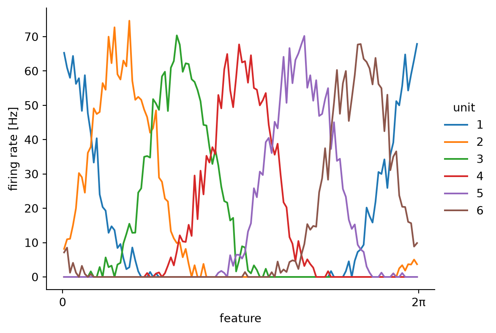
We can see that the mean activity of the neurons is clearly modulated by the feature, and that each neuron has a clear preference, matching our generation pattern. For more, take a look at the Pynapple user guide on tuning curves, as well as the real examples.
11.7.6 Decoding
If we know the mean activity of many neurons with respect to a variable, we should be able to predict the current value of that variable, given the current activity of the neurons. This is the premise of Bayesian decoding. The tuning curves of a population of neurons is used as a ‘template’ of what activity matches what feature value. Combined with Poisson statistics, Bayesian decoding provides a simple but principled way of neural decoding.
Using Pynapple, we can easily do Bayesian decoding, provided we have:
- a set of tuning curves computed using
compute_tuning_curves - the activity of the neurons matching the tuning curves
- a (temporal) bin size, to bin activity in
- a smoothing window, if we want to smooth the activity (this often helps for Bayesian decoding, by reducing noise)
decoded, proba_feature = nap.decode_bayes(
tuning_curves=tuning_curves,
data=tsgroup,
epochs=epochs,
bin_size=0.02,
sliding_window_size=4,
)
decodedTime (s)
------------------- -------
0.01 4.52913
0.03 4.68621
0.05 4.68621
0.06999999999999999 4.58149
0.09 4.42441
0.11 4.16261
0.13 4.16261
...
9.87 4.47677
9.89 4.47677
9.91 4.47677
9.93 4.47677
9.95 4.05789
9.97 3.79609
9.99 3.79609
dtype: float64, shape: (500,)The output consists of a Tsd, containing the predicted feature values at every time step, and a TsdFrame containing the estimated probabilities of each feature value at every time step:
Show plotting code
fig, (ax1, ax2) = plt.subplots(figsize=(6, 5), nrows=2, ncols=1, sharex=True)
ax1.plot(
feature,
label="true",
linestyle="none",
marker="o",
markersize=4,
alpha=0.5
)
ax1.plot(
decoded,
label="decoded",
c="orange",
linestyle="none",
marker="o",
markersize=3,
)
ax1.spines['right'].set_visible(False)
ax1.spines['top'].set_visible(False)
fig.legend(frameon=False, bbox_to_anchor=(1.1, 0.8))
ax1.set_ylabel("feature")
ax1.set_yticks([0, 2*np.pi], ["0", "2π"])
proba_feature = (proba_feature.values - np.min(proba_feature.values, axis=1, keepdims=True)) / np.ptp(proba_feature.values, axis=1,keepdims=True)
im = ax2.imshow(proba_feature.T, aspect="auto", origin="lower", cmap="viridis", extent=(0, 10.0, 0, 2*np.pi))
cbar_ax = fig.add_axes([0.93, 0.1, 0.015, 0.36])
fig.colorbar(im, cax=cbar_ax, label="probability")
ax2.set_xlabel("time (s)")
ax2.set_ylabel("feature")
ax2.set_yticks([0, 2*np.pi], ["0", "2π"])
plt.show()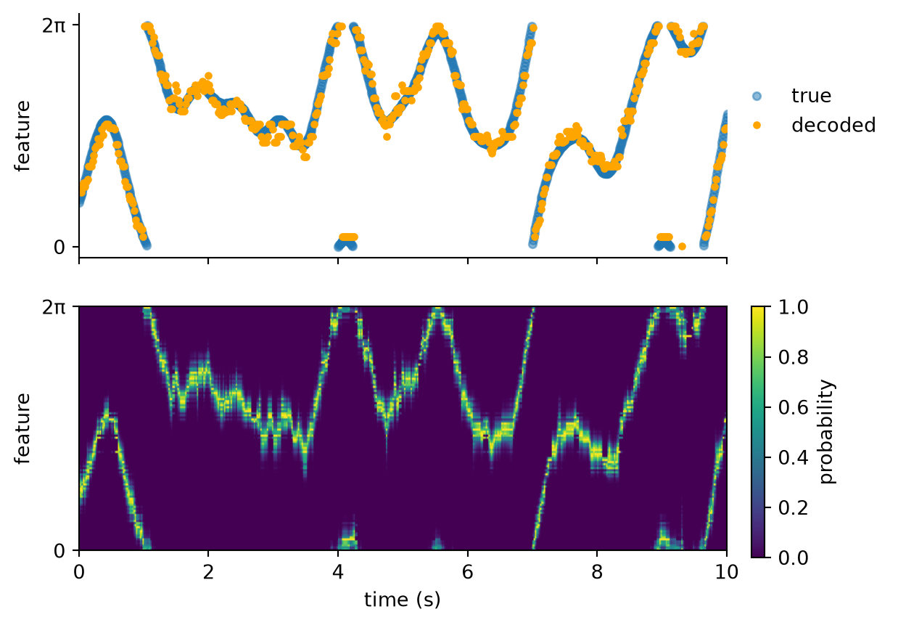
For more, take a look at the Pynapple user guide on decoding, as well as the real examples.
11.8 Integration with other packages
11.8.1 Pynaviz

Pynaviz provides interactive, high-performance visualisations designed to work seamlessly with Pynapple time series and video data.
It allows synchronised exploration of neural signals and behavioral recordings.
It is build on top of pygfx, a modern GPU-based rendering engine.
To install it:
pip install pynaviz[qt]11.8.2 NeMoS

NeMoS (Neural ModelS) is a statistical modeling framework optimized for systems neuroscience and powered by JAX.
It streamlines the process of defining and selecting models, through a collection of easy-to-use methods for feature design.
The core of nemos includes GPU-accelerated, well-tested implementations of standard statistical models, currently focusing on the Generalized Linear Model (GLM).
Check out this page for many examples of neural modelling using nemos and pynapple.
To install it:
pip install nemos11.9 Data
Pynapple provides many ways to load your data.
11.9.1 NWB
The main input format Pynapple can read is Neurodata Without Borders (NWB).
Pynapple will parse all data in the file that can be represented as a Pynapple object and present a dictionary-like interface for selecting them.
data = nap.load_file('A2929-200711.nwb')
dataA2929-200711
┍━━━━━━━━━━━━━━━━━━━━━━━┯━━━━━━━━━━━━━┑
│ Keys │ Type │
┝━━━━━━━━━━━━━━━━━━━━━━━┿━━━━━━━━━━━━━┥
│ units │ TsGroup │
│ position_time_support │ IntervalSet │
│ epochs │ IntervalSet │
│ z │ Tsd │
│ y │ Tsd │
│ x │ Tsd │
│ rz │ Tsd │
│ ry │ Tsd │
│ rx │ Tsd │
┕━━━━━━━━━━━━━━━━━━━━━━━┷━━━━━━━━━━━━━┙11.9.2 Raw data
Raw data can be loaded with pynapple through the NEO library (also used by SpikeInterface). Many formats are supported, see here.
data = nap.EphysReader("path/to/raw")11.9.3 Saving as .npz
Pynapple objects can be saved (and loaded) as Numpy .npz files.
tsd = nap.Tsd(t=np.arange(10), d=np.arange(10))
tsd.save("my_tsd.npz")
loaded = nap.load_file("my_tsd.npz")
loadedTime (s)
---------- --
0 0
1 1
2 2
3 3
4 4
5 5
6 6
7 7
8 8
9 9
dtype: int64, shape: (10,)11.9.4 Streaming from DANDI
Data in the NWB format can be directly streamed from the DANDI archive into Pynapple.
Here is useful function to keep on hand that does this for you:
from pynwb import NWBHDF5IO
from dandi.dandiapi import DandiAPIClient
import fsspec
from fsspec.implementations.cached import CachingFileSystem
import h5py
def stream_dandiset(dandiset_id, filepath):
with DandiAPIClient() as client:
asset = client.get_dandiset(dandiset_id, "draft").get_asset_by_path(filepath)
s3_url = asset.get_content_url(follow_redirects=1, strip_query=True)
# first, create a virtual filesystem based on the http protocol
fs = fsspec.filesystem("http")
# create a cache to save downloaded data to disk (optional)
fs = CachingFileSystem(
fs=fs,
cache_storage="nwb-cache", # Local folder for the cache
)
# next, open the file
file = h5py.File(fs.open(s3_url, "rb"))
io = NWBHDF5IO(file=file, load_namespaces=True)
return nap.NWBFile(io.read())11.10 Your turn
Now it is your turn!
We will compute head direction tuning curves in the postsubiculum, and use these to decode head direction from neural activity. We will use the same dataset we have been working with in the preprocessing, sorting and curation chapters.
However, to ensure the decoding is accurate we will need much more data than we previously used. Therefore, we will use the full .nwb file for the session that contains pre-computed spike times, as well as behavioural data.
This dataset can be downloaded from the course data Zenodo, filename: dandiset-000939-no-traces-full.nwb. See here for more details on data provenance.
If you are confident, you can write your own code using the snippets provided in this chapter.
If you want a bit more help, follow along in this notebook.